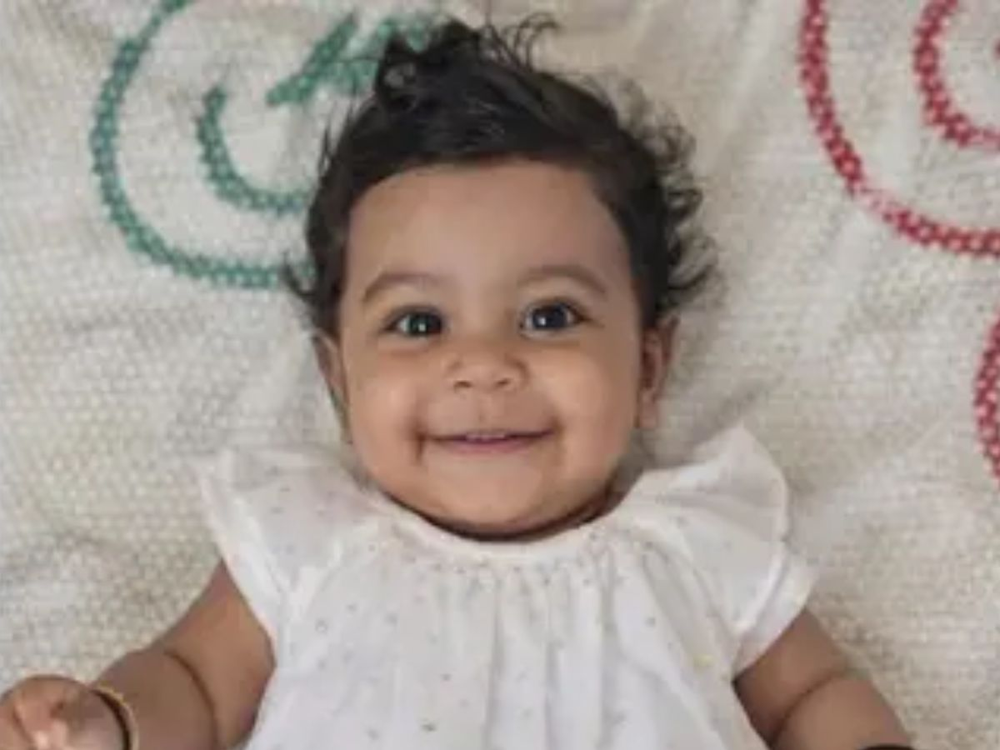

Ten-month-old Aalin Sherin Abraham became Kerala’s youngest organ donor after a fatal accident. At Amrita Hospital, her parents chose to donate her organs, saving five lives. The state honored her with a ceremonial farewell. Aalin Sherin Abraham’s story, which began when she was 10 months old, has created a deep emotional impact on Kerala because it turned her family’s most painful experience into a source of optimism that saved five others. The road accident that occurred on February 5, 2026, resulted in severe injuries for Aalin, who died from brain death at Amrita Hospital in Kochi. Her parents, Arun Abraham and Sherin Ann John, showed extraordinary strength when they agreed to donate her organs, which made her the youngest organ donor
